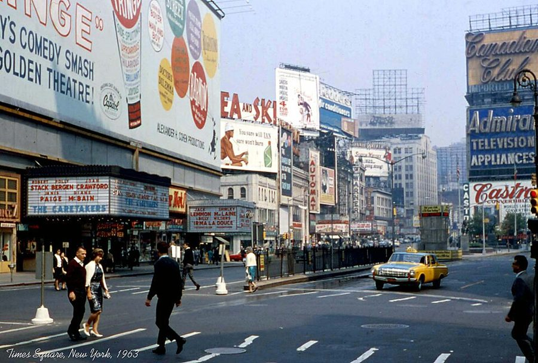
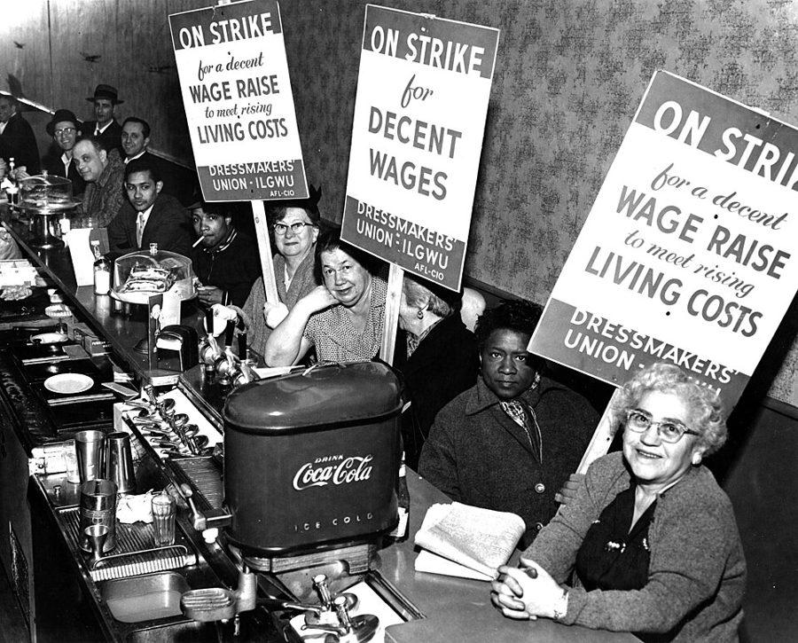
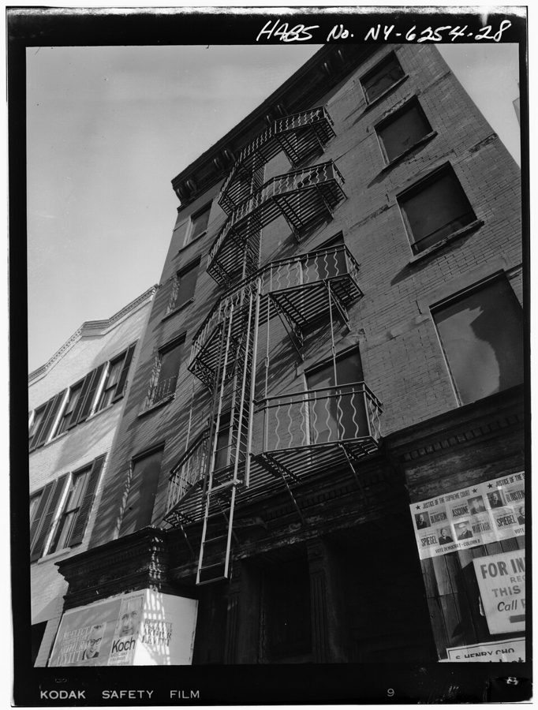
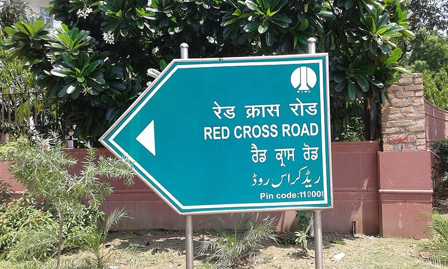

读之前
这一页是报告 14 的后半：6 月 24 日到 7 月 9 日，七条，约 5100 词。前两条占了七成多，后五条都很短。查理还没回实验室，白天读书写东西，夜里一个人在城里走。读的时候抓两条线：一条是他说的「旧查理」，那个一直在旁边看着他的自己，留意它在哪些时候出现、他怎么对它说话；一条是他的工作和时间：手上的研究、对门的 Fay、迷宫里的 Algernon。
三十出头，智力早已远远超过身边的人。6 月 13 日带着 Algernon 从芝加哥的大会出走，回纽约住进 43 街和第十大道的公寓，没回实验室；给 Alice 打过电话，没等她接就挂了。找到父亲 Matt 的理发店，Matt 没认出他，他也没说出自己是谁。对门的画家 Fay 爱跳舞喝酒，有一晚把他灌醉，醉后的他像个孩子。他认定旧查理没有走，一直在等。
读的时候带着这几个问题。不用先找答案，读完回来对照「检查一下理解」。
6 月 24 日查理从一家电影院走到另一家，他说自己真正想要的是什么？这和这一条后面的事有什么关系？§1
查理怎么向 Alice 解释两人之间隔着的东西？和报告 12 里他以为的原因比，换成了什么？§2
留意「查理」在这一页里每一次出现：在哪里，隔着什么，现在的查理怎么对它说话。§2 §4 §6
后五条都很短。比一比写工作的句子和写 Fay 的句子，口气、用词有什么不同？§3–§7
分节地图
这一页有七条带日期的报告。读完一条打个勾；每条下面的英文是那一条开头的几个词，在 Kindle 里搜它就能跳过去。没读的那几行先模糊着，免得提前看到情节，点一下就能看清。全页约 5100 词，§2 一条就有 2600 词，可以在 §2 前后各坐一次。
6 月 24 日约 1200 词 Today I went on a strange … 从电影院走到餐馆。留意查理最先的反应，和他最后的打算。 6 月 25 日约 2600 词 I called Alice today. I was … 全页最长，有性描写。留意他怎么向 Alice 讲旧查理，和后半夜那扇窗。 6 月 29 日约 100 词 Before I go back to the … 一段话，一个电话。留意最后那几个问句。 6 月 30 日约 300 词 I’ve stopped wandering the streets now … 留意他怎么写 Fay，和最后那句很短的话。 7 月 5 日约 200 词 I dedicated my first piano concerto … 留意他对 Fay 的两样评价：一首曲子，一笔钱。 7 月 8 日约 400 词 Not much time for work—between the … 留意写论文那段的口气，和夜里「出场」的是谁。 7 月 9 日约 300 词 A terrible thing happened today. Algernon … 留意 Algernon 的动作，和查理写它时用的是哪种文体。
背景：书里默认你知道的事
按在书里出现的顺序排，标题前是节号。人名后面括号里是中译本的译名，读者想对照译本时用。
§1 这一页说到的人
Fay Lillman 费伊 对门的画家，三十五岁上下，离了婚，前夫会寄赡养费支票来。门从不上锁，常从消防梯爬窗过来。爱跳舞、爱喝酒，说直线和方盒子让她难受。
Alice Kinnian 艾丽斯 查理在成人班的老师，他爱她。报告 12 里两人大吵过一次；他出走以后一直没和她说上话。
Algernon、Minnie 阿尔吉侬、米妮 查理在公寓里给 Algernon 搭了立体迷宫。上一页它不用食物奖励也肯学，却时常发狂；Fay 送来一只小母鼠 Minnie 给它做伴。
Landsdoff 兰茨多夫 §3 电话里的物理学家，和他所在的「新高等研究院」一样，是书里虚构的。
§1 时代广场的电影院当时时代广场一带电影院一家挨一家，很多是连续放映：一天里同一部片子循环放，什么时候进场都行，看完了想再看一遍也可以接着坐。报告 9 里查理说，从前一部片子他要看三四遍才懂。两片连映和时代广场本身，报告 11 的页面有详细说明。Keno Amusement Center 是书里的名字，amusement center 指投币玩游戏机的游戏厅。

1963 年的时代广场。左边两家电影院的门头招牌（marquee）上列着正在放映的片名和主演。wilford peloquin，CC BY 2.0，维基共享资源 §1 diner 和 Mazel tovdiner 是美国街角常见的小馆子：一条长柜台配一排高脚凳，加几张卡座，卖咖啡、三明治、简单的热菜，便宜，很多开到深夜。洗碗、收盘子是这种店里最底层的活。§1 里客人起哄喊的 Mazel tov 是希伯来语、意第绪语里的「恭喜」「好运」；犹太婚礼上新郎踩碎一只玻璃杯，宾客就齐喊这一句。书里说，餐馆里谁打碎了杯盘，总有客人这样起哄。

约 1955 年，罢工的制衣女工在一家 diner 的长柜台前歇脚。说明页没写在哪座城市，和本书无关，看的是那时 diner 的样子。Kheel Center，CC BY 2.0，维基共享资源 §2 上城、下城、横穿市区曼哈顿的棋盘路网报告 11 的页面有详细说明。纽约人说方向用的是 uptown（往北，街号变大）、downtown（往南）、crosstown（东西向横穿）。所以 took a taxi uptown 就是往北去，crosstown bus 是沿着一条街东西向开的公共汽车：地铁大多南北向跑，要往东西走，常得下车换它。Alice 住在 77 街（报告 11），查理的公寓在 43 街和第十大道。
中央公园
77 街 59 街 49 街 43 街 14 街
Alice 家（77 街）
时代广场
查理和 Fay 的公寓 43 街 / 第十大道
格林尼治村（14 街以南）
↑ 往北出图：布朗克斯
uptown 上城 ↑ downtown 下城 ↓ crosstown 横穿 ↔
第十大道 第七大道 第五大道
本站示意图：这一页提到的几处大概在哪，不按比例。北在上。77 街在中央公园两侧都有，书里没说 Alice 住哪一侧。Matt 的理发店在布朗克斯（上一页），在图的北边以外。 §2 消防梯纽约的老式出租公寓楼外墙上挂着铁架子：每层窗外一个小平台，用斜梯一层层连下去，最下面一段梯子可以放下来到街面。这是失火时的逃生通道（fire escape），19 世纪后期起纽约的法律就要求出租公寓楼装。平时住户在上面晾衣服、乘凉、放花盆，也从它爬窗串门。报告 14 前两页里，查理和 Fay 的客厅窗户就由同一道消防梯连着。

曼哈顿东 48 街 341 号一栋出租公寓楼正面的消防梯，美国历史建筑调查（HABS）拍的档案照片。作者不详，公有领域，维基共享资源 §3 高等研究院和「对产生」真实的高等研究院（Institute for Advanced Study）在新泽西州普林斯顿，1930 年成立，爱因斯坦是最早的教授之一。书里的 New Institute for Advanced Study 和它的期刊都是虚构的。查理说的 pair production（对产生）和 nuclear photoeffect（光核效应）都是真实的物理现象：前者是高能光子在原子核附近变成一个电子和一个正电子，后者是光子被原子核吸收、打出中子或质子。把它们用到生物物理上是查理的点子，书里没有展开。
§6 乌尔都语和结构语言学乌尔都语（Urdu）是巴基斯坦的国语，在印度也有很多人说。它和印地语口语大体相通，文字却不同：乌尔都语用波斯-阿拉伯字母，从右往左写。结构语言学（structural linguistics）是 20 世纪上半叶美国语言学的主流，重说出来的话、轻书面文字，重视到田野里记录活的口语。布龙菲尔德（Leonard Bloomfield）1933 年的《语言论》就说，文字不是语言，只是用看得见的记号把语言记下来的办法。查理在 §6 挖苦的就是这一派。

新德里的一块路牌，同一个路名写了四遍：最上面是印地语（天城文），第二行英语，第三行旁遮普语，最下面一行就是乌尔都语。Sidheeq，CC BY-SA 4.0，维基共享资源 词与短语
三类：紫边的「查理拼的」是他拼错的词，先写还原的拼法；黄边的「每个字都认识」是熟词生义、俚语、别人话里的弦外之音；其余是这里用法特别的词。斜体小字是原句里的几个词，在 Kindle 里搜它就能找到原文。这一页查理已经没有拼错的字。
§1 6 月 24 日
binge
… a strange kind of anti-intellectual binge.
一阵放纵，一通狂……
binge 本来多指狂吃狂喝一通（drinking binge 是连喝几天酒）。查理不敢喝酒，就「反智」地放纵一回：不读书，一家接一家看西部片和恐怖片。
whipped with guilt
… I would find myself whipped with guilt.
被内疚抽打着
whip 是鞭打。看「低级」电影让现在的他觉得有罪。
make-believe
… in the make-believe screen world that …
假想的，编出来的
本来是孩子「假装」的游戏（let’s make believe…），这里指银幕上的虚构世界。
the rush
… on the subway during the rush—but …
（上下班的）高峰时间
rush hour 的省略说法，不是「匆忙」。查理说挤在高峰的地铁里并不觉得和人连着。
blind alley
… dark corners and blind alleys of …
死胡同
blind 在这里是「不通的」，不是「瞎的」。§2 里他对 Alice 又说了一次（just another blind alley），那次是比喻：走不通的路。
drop off
… and drop off into a deep sleep, …
睡着
drop off 也有「放下、下降」的意思，这里是不知不觉睡过去。
diner
… my own place I went to the diner.
（街角的）小餐馆
见「背景」。the diner 带定冠词：他熟悉的那一家（1959 年的中篇里写明是他每晚吃饭的街角小馆）。译本：「而是去吃晚餐」。去那家小馆子成了去吃饭，餐馆这个地方没交代出来。
there go the profits
… cries of “hey, there go the profits!” …
利润全摔没了
there go… 是眼看着东西没了时的感叹。客人拿打碎的盘子挖苦店家，后面还有几句类似的起哄。
ward off
… as if to ward off a blow.
挡开（一击）
男孩举起胳膊护着头：他以为要挨打。
at someone’s expense
… amusing themselves at his expense.
拿某人取乐
expense 本义是花费，at his expense 是「代价由他来付」：别人笑，难堪的是他。
mirror
… he slowly mirrored their smiles and …
（像照镜子一样）跟着做
男孩不知道大家笑什么，看着别人笑，自己也慢慢笑起来。
feel sick inside
… I felt sick inside as I …
心里一阵难受，堵得慌
sick 在这里是恶心、难受，不是生病。译本：「从心里感到厌烦」。厌烦是嫌弃、不耐烦，原文是看着男孩的笑脸，自己心里翻腾。
create a scene
… for losing control and creating a scene, …
当众闹一场
scene 是「当众吵闹的场面」，常说 make a scene。查理喊完立刻怪自己失态。
play the clown
… had foolishly played the clown.
扮小丑，出洋相逗人笑
play the + 角色，是「扮演……那一类人」。查理说的是不久前的自己。
mentally retarded
… more than five million mentally retarded …
智力障碍者（当时的说法）
the mentally retarded 是当时的正式说法，后来成了骂人话，美国联邦法律 2010 年改用 intellectual disability。这个数字见读后部分的「对照今天」。
§2 6 月 25 日
uptown
… I took a taxi uptown, impatient …
往上城（北边）
见「背景」。Alice 住在 77 街，在查理的公寓以北。
skid row
… or wandering around skid row with …
流浪汉、酒鬼聚集的破败街区
不是哪条叫 Skid 的街，是一类地方的叫法。Alice 怕他失了忆流落到那里。
short circuit
… you, there was a short circuit.
短路
前一句说他还带着孩子气的查理的 emotional wiring（情感的线路），一靠近 Alice 就「短路」。查理用电路打比方讲自己的感情。
it came to me
… around the city, it came to me.
我想到了，我忽然明白了
主语是「想法」：想法自己来到他这里。不是「它朝我走来」。
lost soul
… wandering around like a lost soul, …
迷途的灵魂，失魂落魄的人
紧跟着他说 then I saw that I was lost（原文 was 是斜体）：先是打比方，接着发现字面也对，他真的迷路了。
the last place (to find it)
… the last damned place I could …
最不可能找到它的地方
the last place I’d find it 是「最不可能的地方」，不是「最后一处」。他说在夜里的暗街上找和人连在一起的办法，是找错了地方。译本：「我在那里能找到的最后末路上」。按字面译成了最后、末路，最不可能的意思丢了。
sounding board
She was my sounding board and …
听人倾诉、帮人理清想法的人
本义是讲台上方反射声音的板子，或乐器的共鸣板。比喻：对着她说，自己的想法才听得清。
burn out the infection
… I was burning out the infection …
把感染烧掉
前一句他说自己发热、像发烧，身上像着了火：发烧就像身体在把感染烧掉。他把一股脑说出心里的恐惧，比作这样烧掉病灶。
red-cheeked maiden
… the cringing, red-cheeked maiden—and I …
脸颊通红的少女
Alice 沙发上方那幅画，报告 11 里第一次写到：戴面具的侍臣持剑护着一个受惊的少女。那时他写的是 frightened, pink-cheeked，这一回是 cringing（瑟缩的）、red-cheeked。
give oneself to someone
… she would give herself to me, …
（女方）愿意和某人发生关系
旧式委婉的说法，字面是「把自己交给」。
strangle hold
… break Charlie’s strangle hold on my …
卡脖子的控制
本来是摔跤里锁喉的招数，比喻死死掐住、不让动弹。
conjure up
… I conjured up the picture of Fay …
（在脑子里）召唤出
conjure 是变戏法、念咒召唤。他闭着眼，硬把另一个人的样子「变」出来。
would soon tell
… mounting excitement that would soon tell.
很快就要显出来，很快就见分晓
tell 不及物时可以是「起作用、显出效果」，不是「告诉」。说的是身体上的兴奋，原文写得含蓄。
be through doing something
… I’m through running. I’ve got work …
不再……了，……够了
through 是「完了」。回应 Alice 那句「别再逃走」。
crosstown bus
… Heading toward the crosstown bus, I …
东西向横穿曼哈顿的公共汽车
见「背景」和示意图。地铁多是南北向，往东西走常要换这种车。
a fifth
… bought a fifth of gin.
一瓶（约 750 毫升）
fifth 是五分之一美制加仑，约 757 毫升，当时烈酒最常见的瓶子就是这么大，美国后来改成公制的 750 毫升。不是「第五」。
bum
… as I had seen bums do, …
流浪汉
美国口语。英国英语里 bum 是屁股。流浪汉在街上把酒瓶套在纸袋里喝，查理照着做了一回。
not give a damn
She didn’t give a damn about anything.
什么都不在乎
damn 在这里是「一丁点」，带粗口的强调。说的是 Fay 出门不关灯、什么都不操心。
stand on one’s head
… Why are you standing on your head?
倒立
是 Fay 倒仰着头看他，所以看到的查理是倒着的。她拿自己的姿势开玩笑。
square
… I danced with too many squares tonight.
古板、没意思的人
1940–60 年代的俚语，和 hip（时髦、懂行）相对。这里也读得出双关（本站的读法）：两人刚说要用酒把直线和方框「抹掉」、让线条「化开」，她接着就说要把这些 squares 都 melt down。译本：「我今晚跟太多讨厌鬼跳舞」。古板的意思和方形的双关都没了。
What’s up?
… Hey, there, boy! Whoa! What’s up?
怎么回事？你这是要干嘛？
平常是打招呼的话；这里 Fay 被他摸着光背，问的是他想干什么。前面的 Whoa 是喝住马的声音。查理答 Me，字面是「是我（没睡）」：be up 是没睡，他接着说一直在等她回来。up 在口语里也能指男人起了反应，放在这一场里读得出一层性暗示。这是本站的读法，原文没有点破。
poor bastard
… go ahead, you poor bastard—watch.
可怜的家伙
bastard 字面是私生子，口语里是粗话；前面加 poor，骂里带着怜悯。
§3 6 月 29 日
pair production
… utilizing the pair-production nuclear photoeffect for …
（物理）对产生
见「背景」。查理在电话里谈的是物理学家的本行。
crackpot
… he thought I was a crackpot, …
怪人，满脑子怪论的人
crack 是裂缝，crackpot 字面是「破了的罐子」，指想法古怪、不可理喻的人。
take someone up on something
… I might take him up on it …
接受某人的邀请或提议
不是「把他拿起来」。it 指 Landsdoff 请他去研究所讨论。
§4 6 月 30 日
kid someone about something
She kids me about my locking …
拿某事取笑某人
kid 作动词是「开玩笑、逗」，后半句查理又 kid her 回去。两人互相取笑，口气是亲近的。
can’t be bothered
… because she couldn’t be bothered about picking …
懒得（去做）
不是「不能被打扰」。这一句是查理的叙述；下一段他又说她 just can’t or won’t bother，再下一段 Fay 自己说了 I just can’t be bothered。
wearing
… may become wearing after a while is …
（形容词）累人的，磨人的
不是「穿着」。wear 有「磨损」的意思，wearing 就是磨人的。说的是 Fay 天天要去跳舞。
§5 7 月 5 日
one more argument for polygamy
One more argument for polygamy.
又多了一条支持一夫多妻的理由
玩笑话，不要当真读：一个女人不可能样样都合他的意。
poor bitch
… this poor bitch must have needed …
可怜的丫头
bitch 是很重的骂人话，Fay 嘴里加上 poor，意思反倒是同情：那个女孩一定是急等钱用。
go after someone’s skin
… I’m not going after her skin—if …
追着要人的命，不肯放过
skin 指人本身（save one’s skin 是保命）。这里是说不打算追究到底。
§6 7 月 8 日
club-hopping
… between the nightly club-hopping and the …
一晚上连赶几家夜总会
hop 是跳；bar-hopping 是一家酒吧喝完换下一家。
can’t help but admire
I can’t help but admire the structural …
（反话）真叫人不得不佩服
字面是「忍不住佩服」，接下去几句带着挖苦：他说结构语言学靠「书面交流的退化」立了门户。要反着读。
more and more about less and less
… more and more about less and …
对越来越小的题目知道得越来越多
流传已久的俏皮话，挖苦专家钻牛角尖，最早出自谁说法不一。
grunt
… linguistic analysis of the grunt.
咕哝，哼哼声
原文是斜体。查理把语言学家记录的口语说成猪哼一样的声音，是夸张的挖苦。
far gone
… I was pretty far gone before …
（醉得）很厉害
far gone 指醉得、病得或陷得很深，不是「走得很远」。
get a hand
He got a great hand before …
赢得掌声
hand 在这里是鼓掌（give him a big hand）。He 是醉后冒出来的「查理」。
moron act
… everyone liked my moron act.
「傻子」表演
act 是舞台上的一段节目。moron 是当时的分级用词，早已成了骂人话（报告 10、12 的页面有详细说明）。这是查理转述 Fay 的话。
§7 7 月 9 日
perk up
… he’d perk up and run …
来了精神
平时 Fay 一进屋，Algernon 就精神起来跑向她。
white puff
… curled up into a white puff.
一团白绒球
puff 是一团蓬松的东西，比如粉扑（powder puff）。白老鼠缩成了一个毛球。译本：「缩得像一团白色泡芙」。泡芙是 cream puff，这里的 puff 是一团绒毛。
trap door
… through the top trap door, …
（笼顶的）活门，翻板门
trap door 是开在顶上或地上、掀起来进出的门，和「陷阱」无关。
reward box
… the other end in the reward box.
（迷宫终点的）奖励格
迷宫尽头放食物的格子。6 月 19 日查理写的是 goal-box，说的是同一个地方。
snap at
… box and snapped at me.
（动物）猛地咬过来
snap 是「啪」地一下。说人时是厉声呵斥：§2 里查理对 Alice 喊别说话，用的也是 I snapped。
snap judgment
… to make a snap judgment.
仓促的判断
snap 作形容词是「一下子做出的」。查理用实验记录的口气提醒自己别急着下结论。
查理的文字
拼错的词一直是 0，这一页看的是句子。切到「长词」：6 月 29 日（8.7%）和 7 月 8 日（8.8%）是两个尖峰，写的正是物理学家的电话和乌尔都语论文，满纸 pair-production、psychophysical、methodology、superstructure；7 月 8 日的句长也是这一页最长的（平均 17.6 词）。写 Fay 的 6 月 30 日、7 月 5 日，长词回到 3% 上下。6 月 25 日最长（约 2600 词），对话多，句子最短（平均 10.6 词），逗号、破折号也最密。
声音也在变。旧查理在他笔下越来越像另一个人，有名字、有动作，会 made his appearance；Fay 的口头禅也进了他的句子：goddamned 是 6 月 19 日 Fay 挂在嘴边的词，6 月 30 日她又说 my goddamned check；7 月 8 日查理转述她的话时写下 the goddamned couch，这是他头一回在自己的叙述里用这个词。最后一条又回到实验记录的口气：behavior、performance、snap judgment。译本：「大家都喜欢我表演白痴」。moron 当年是智力分级里的术语，后来才成了骂人话，中文没有这样一个词，只能译成白痴。
值得停下来的句子
Now I can see that unknowingly I joined them in laughing at myself. That hurts most of all.— §1，6 月 24 日，在餐馆里为洗碗工发火之后。本站译：现在我看出来了，我曾不知不觉地跟着他们一起笑自己。这最叫人难受。
报告 9 里他刚知道别人在笑他；这一句往前又走了一步：笑的人里也有他自己。这一条里他先是跟着众人觉得好笑，认出男孩是什么人以后才发火，所以这句话不是在说别人。中篇里也有这场戏（日期是 5 月 20 日），查理也承认自己跟着笑过。长篇在前面加了时代广场找「观众」的那一段，又加了一句男孩身上有种眼熟的东西：他认出男孩之前，先想要的是和人群在一起。
Charlie has stopped watching us.— §4，6 月 30 日，这一条的最后一句。本站译：查理不再看着我们了。
短到只有五个词，单独成段。Charlie 是第三人称，us 是他和 Fay。五天前在窗外看的那张脸，这时被他写成「不看了」，像一件解决了的事。可 7 月 8 日醉后，Charlie 又 made his appearance，上台跳了一段踢踏舞，得了满堂彩：他没有走，只是从窗外换到了台上。
读完想一想
1. 在餐馆里，查理先跟着笑，然后站起来喊「他是个人」，当天就想好了大计划：找基金会、改进技术，去帮美国五百多万智障者和更多的人。从羞愧到这么大的计划，只隔了几段。你怎么看这一步？
本站的看法 两样都是真的：他说自己「活过两个世界」，这是别人没有的资格；他也说要停止为自己的过去和未来孩子气地发愁，把自己给别人。可这个计划仍然是从「把他们变得像我」出发的，他刚喊过的是「他是个人」，没说「他需要被治好」。§3 他自己也问还剩多少时间。这一步是不是又一次逃开自己的感情问题，可以带着往后读。
2. 6 月 25 日在 Alice 家，查理关了灯，想把她当成 Fay。他自己说这样做 wrong、disgusting，最后停住了，说「我是要利用你」。同一夜他去找了 Fay。这一夜他对 Alice、对 Fay 各是怎样的？
本站的看法 对 Alice，他在最后一刻承认了那是利用，没有装下去，这是他这一夜最诚实的地方；但让她坐在黑暗里等、再突然推开，伤害已经发生了。对 Fay，她明说过不想被撩起来又失望，他发誓今晚不一样。书里 6 月 30 日他写「这不是爱，但她对我很重要」。Fay 知不知道自己在这一夜里被当成了什么，书里没写，本站不替她回答。
隔着窗或玻璃
在同一个地方
不在了，或换了位置
5/17 报告 11 公园草丛里的男孩（他后来认定是幻觉）
6/5 报告 12 面包店橱窗变成镜子，十四五岁的他
6/10 报告 13 飞机窗外的云里，约五岁的他
6/23 上一页 像站在门口的第三个人
6/25 §2 Alice 家，黑屋里有人在看
6/25 §2 Fay 的窗外，他刚才蹲过的地方
6/30 §4 「查理不再看我们了」
7/8 §6 醉后他上了台，被大家看
本站示意图：在看着查理的那个查理，按日期排。只列到这一页为止。 3. 上图里，那个旁观的查理出现了八次。6 月 25 日夜里，那张脸贴在 Fay 的窗外，正是查理几分钟前自己蹲着偷看的地方。他对它说「你看吧，我不在乎了」。你觉得这一夜他是摆脱了旧查理，还是只是不再理它？
本站的看法 本站的读法：窗外的位置是关键。几分钟前，查理自己就是那个蹲在消防梯上、隔着窗看 Fay 的人；那张脸看到的，是他刚才看到的。他说旧查理一直在看，这一夜他自己也成了看的人。6 月 30 日他写「查理不再看了」，7 月 8 日醉后那个查理却上了台，这回是被一屋子人看。旁观者没有消失，只是换了位置。这是本站的读法，书里没有这样说。
对照今天
成立 后来的事实印证了这个说法部分成立 一部分对，一部分被后来的事改了被改写 后来的事实推翻了它，或者完全变了样书里的说法：美国有五百多万智障者（查理，§1）
书里 查理想把这项技术推广：美国五百多万智障者怎么办，全世界还有无数。中篇里同一处只说成千上万像他这样的人，这个数字是长篇加的。
当时 1962 年 10 月，总统智力迟滞问题专门小组给肯尼迪的报告估计，全国约 3% 的人口、约 540 万人是智障者，其中约 40 万需要长期照护，其余约 500 万是轻度。1963 年 2 月肯尼迪致国会的特别咨文说 500 万到 600 万。查理的数字和当时的官方估计一致。
今天 常引的比例是总人口的 1% 左右（美国精神医学学会 DSM-5，2013）。差别的一个来源是定义：今天诊断智力障碍要同时看适应日常生活的能力，只是智商分数低不算。这个定义本身也改过几次，美国智力缺陷协会 1973 年把智商的界线定在约 70（低于平均两个标准差）。所以两个比例不能直接比。核对于 2026-10。依据：总统智力迟滞问题专门小组报告（1962），肯尼迪致国会特别咨文（1963），美国精神医学学会 DSM-5（2013）。
书里的说法：正派的人不会去占天生缺手缺脚的人的便宜，却不把欺负智力低的人当回事（查理，§1）
书里 餐馆里的客人拿打碎盘子的洗碗工起哄取乐，查理说这种事一点也不稀奇，他自己不久前也被这样笑过。7 月 8 日他转述 Fay 的话：大家都喜欢他醉后的「moron 表演」。
当时 moron、idiot 这些原本是分级的术语，早已成了日常骂人的话（报告 10、12 的页面有详细说明）。
今天 欺负没有消失：一项汇总各国研究的综述（Hughes 等，Lancet，2012）发现，智力障碍成年人遭受暴力的风险高于非残障成年人（汇总的比值比约 1.6），各研究之间差异很大；残障者总体的风险也偏高（比值比约 1.5）。这项综述没有单独算肢体残疾的人，所以「对肢体残疾的人就不会」这一半，至少拿不出证据来支持。态度和用词在变：2009 年特殊奥林匹克运动会等发起 Spread the Word to End the Word，反对把 retarded 当骂人话；2010 年美国《罗莎法》（Rosa’s Law）把联邦法律里的 mental retardation 改成 intellectual disability。核对于 2026-10。依据：Hughes 等人在 The Lancet 的综述（2012），Special Olympics 网站，Rosa’s Law（2010）。
检查一下理解
先在心里答，再点开。答错的那题，回书里把对应那一条再读一遍。
1.（§1）查理一家接一家看电影，他说自己真正想要的是什么？ 不是电影，是观众：他想和黑暗里身边的人待在一起，感到自己和别人连着。看「低级」电影本身让他内疚，看到一半就走。
2.（§1）洗碗工打碎盘子以后，查理的反应是怎样一步步变的？ 起先他和别的客人一样觉得好笑；认出男孩是智障者以后，他对自己、对起哄的人都发了火，站起来喊他们闭嘴、说男孩也是人。喊完又怪自己当众失态，饭没动就付账走了，为自己和男孩都觉得羞愧。
3.（§2）查理对 Alice 说，挡在两人之间的到底是什么？ 他说原来以为是自己的智力和骄傲（这个念头还是 Alice 给他的），其实是旧查理：那个因为母亲而怕女人的小男孩。他的智力长大了，情感的线路还是孩子的，一靠近 Alice 就短路。
4.（§2）查理为什么关了灯？最后又为什么推开 Alice？ 他想骗过旧查理：旧查理只怕 Alice、不怕 Fay，他就在黑暗里把 Alice 想成 Fay。快要成功时他觉得屋里有人在看，叫出声来推开了她。他说再做下去就是在利用她，他不能装。
5.（§5）Fay 这个月为什么早早没了钱？她为什么不报警？ 查理转述：她在舞厅认识一个无家可归的女孩，收留她住下，两天后女孩拿走抽屉里的 232 美元跑了。Fay 说那女孩一定很缺钱，她不想为几百块毁了人家。
6.（§7）7 月 9 日 Algernon 怎么了？查理接下来要做什么？ 它咬了想抓它的 Fay，Minnie 在奖励格里胸口带伤，查理伸手时它又扑上来咬住他的袖子。它仍然不要奖励也能学新题，但动作急、失控，转弯太快撞到隔板。查理决定第二天打电话给 Nemur，送它回实验室。
用一句话说这一页：
精彩回顾
隔几周回来，先看这几张卡片。想不起来的那张，点节号回到这一页，再回书里那一条。
一句话： 查理想重新和人连在一起：为洗碗工出头，在 Alice 面前停住，和 Fay 在一起时不再理会窗外那张脸。
He’s a human being! 餐馆新来的洗碗工打碎了盘子，满屋客人起哄。查理先是跟着笑，然后跳起来喊他们闭嘴，饭没吃就走了。
§1 活过两个世界的人 当晚他决定找 Welberg 基金会，要自己研究这项技术：谁比他更有资格？两个世界他都活过。
§1 黑暗里的名字 在 Alice 家关了灯，他在心里一遍遍念 Fay 的名字，觉得屋里有人在看，叫出声来推开了她。「我还没准备好。」
§2 窗外的脸 同一夜，Fay 的沙发上。他瞥见窗外那张脸，就在他刚才蹲着偷看的消防梯上。「你看吧，我不在乎了。」
§2 四五十张罚单和 232 美元 Fay 把停车罚单藏在椅子后面，免得看着内疚；收留的女孩卷走了她的钱，她不报警。查理说没见过这么坦荡、这么信人的人。
§4–§5 缩成一团的白老鼠 Algernon 咬了 Fay，咬伤了 Minnie，在迷宫里横冲直撞。查理决定送它回实验室。
§7